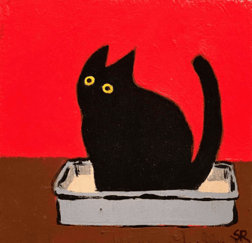
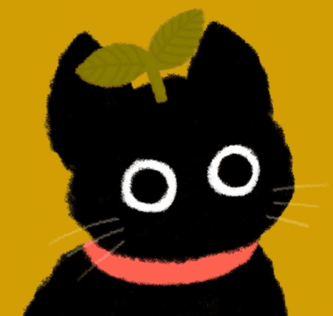

HI!
It’s my portfolio

ABOUT MY WORKS
I create my 2D illustrations in a minimalist style in Adobe Illustrator. The main characters of my works are animals such as cats and dogs. The theme of animals is present in every work because I love them. Most often I draw cats and dogs, because I have a cat named Chips, but no dog yet. When I get a dog, I’ll name him Rusk. I think Chips needs a friend
I like the casual style, it brings emotion into the image, which is why many of the objects in the illustrations have wavy outlines.
I love bright colors, so my illustrations are contrasting: as a rule, it is a bright background on which an animal of a neutral color is depicted